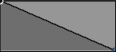
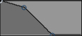

Enables or Disables nCloth Calculations for the current mesh
Collisions

Enables or Disables Collisions for the current mesh

The nCloth will collide with itself, for faster playback you can disable this feature if no significant self collision effects are needed.

Lets you specify which of the polygon's components will calculate collisions:
- face, the most accurate but slowest in calculating
- edge
- vertex, the least accurate but fastest to calculate
Notice in the video how the right cube penetrates the nCloth, this is due the fact that beeing set to Vertex, faces are not calculated therefore they penetrate.

only for nCloth, for Passive Colliders this attribute is ignored, as they don't self collide.
- Vertex (right image)
- VertexEdge
- VertexFace (left image)
- FullSurface

Varies from 0, which is the same as turning off collisions, to 1, which will enable full collision strenght between nCloth and other Nucleus.
If for example you have 2 flags and 2 poles, you can select one pair of them and give them collision layer 1, and the other pair to have collision layer 2. This will separate these two pairs from interact with each other, allowing faster simulation. Infact, by default all collision layers are set to 0, which means that every objects interacts with each other.
Important: related with Collision Layer Range in the nucleus node.

How thick the surfaces is for collision calculations with other passive colliders. Remeber that this attribute is not related with self collision properties, which instead self collision width scale does. Collisions happen on the collision volume, not on the polygon itself.

Self Collision Thickness = Self Collide WIdth Scale * Thickness
So by default 1, self collision thickness is equal to thickness attribute, with value 0.5, only the half.
same as thikness attribute but this is related only to self collision, not with other objects.
displays in the viewport these collision attributes
- Collision Thickness
- Self Collision Thickness
- Stretch Links
- Bend Links
- Weighting
Specifies the color of the collision volumes for the current nCloth object. Display Color is only visible when your scene view display mode is set to Shading > Smooth Shade Selected Items or Shading > Flat Shade Selected Items.
Remember that Display Color has no effect on calculations or render.
Specifies the springiness or bounciness of the current nCloth object. Bounce determines the amount of the nCloth’s deflection or rebound on collision with itself, nParticle objects, passive objects, or other nCloth objects that share the same Maya Nucleus solver.
0 simulates materials like concrete and 0.9 like rubber. Values greater than 1 sould be avoided as they create unpredictable results.

default 0.1, usually looks unnatural as the cloth slides along surfaces as if they were very slippery. By increasing this value the cloth will behave more sticky. This simulation is also influenced by Stickiness. This value is calculated in tangent direction.

how much nCloth tend to stick to another, this value is calculated in normal direction.
Dynamic Properties

Its ability to resist beeing stretched when pulled. So higher values will make it stiffer while lower values will make the cloth behave more elastically.
Stretch resistance is resolution dependent, so you would need to increase this value if your mesh has high resolution. This attribute takes action when the links are longer than the original mesh's.

Is the opposite of stretching, it controls how much the vertices resist to beeing compressed to each other. This attribute takes action when the nCloths links are less then the original mesh's.
Note, although I've used a cube for demonstration, this applies also to open meshes, for example, with default value, a blanquet would not completely cover a sleeping character and you would think Bend Resistance is responsible. However if you 0 this value you'll see that immediately the blanquet will perfectly fold around the character.

How much the mesh resists to bending over edges, with high values, the cloth will almost not bend, behaving like an inflatable object full of air.

A high value will cause the cloth to resist being bent at high angles more than at lower angles. In this video the same Bend Resistance value has been used.

similar to stretch resistance, but is applied along the crosslinks between particles of the nCloth. Shearing causes the nCloth to stretch in an unequal fashion, causing distortion. Usually default 0 is acceptable, stretch resistance and compression resistance keep the cloth from shearing. Also, shear resistance can be slow to calculate. Left is stretch resistance and right is with shear.

The degree which nCloth is allowed to bend across edges before it can no longer return to its rest angle (this only if no forces are acting upon the nCloth)

When no forces are acting upon the nCloth, specifies how far the links in the current nCloth object can stretch before they can no longer return to their rest lengths. Use Restitution Tension to simulate a substance like silly putty being stretched.

Specifies how much the current nCloth object wants to act as a rigid bodyA value of 1 makes the nCloth act as a rigid body, while a value between 0-1 makes a hybrid between cloth and rigid body.

Specifies how much the current nCloth object wants to maintain its current shape. This value determines the degree to which deformations and collisions during simulation impact the nCloth surface.
Note that this attribute does not depend from the orinal mesh, which is the case of Input Mesh Attract.

How strongly the nCloth tends to take the same shape and form of the original mesh.

The delay the cloth has by following the orinal mesh, if this value is 0, the cloth will stick to the original mesh (rest position), if you increase this value, the cloth will delay and react more to the motion.
Determines how the rest length is dynamically scaled from the length determined at the start frame.
Determines how the bend angle is dynamically scaled from the bend angle determined at the start frame. A Bend Angle Scale value of 0, makes the rest shape flat.

determines the density of an nCloth or the weight of an nCloth when the nucleus' gravity is greater than 0.
This value should be based by its type of fabric or material. For example, 0 is appropriate for silk and 1 for felt.
Mass affects behavior in collisions and behavior with Drag. nCloth with high Mass has greater influence on nCloth with low Mass, and it’s less influenced by Drag.

related to wind, first of all activate wind speed from 0 to a higher value. This will alter the way cloth falls through the environment, for example falling leaves. Lift is the perpendicular direction to the wind.
Is the component of aerodynamic force perpendicular to the relative wind. For example, you can use Lift (with Wind Speed and Drag) to create the rippling effect of a flag blowing in the wind.

same as lift, but parallel to the relative wind which causes resistance.

How much to consider the normal direction of polygons. It biases the effects of drag relative to the surface tangent of the current nCloth object. For example, a Tangential Drag of 0.0 causes a flat plane to slice through the air with no resistance and only have drag when moving along its normal axis, and a Tangential Drag of 1.0 causes the effects of drag to be equal in all directions.

From Wikipedia: "In physics, damping is any effect that tends to reduce the amplitude of oscillations in an oscillatory system, particularly the harmonic oscillator". But too much damping will make the cloth look like float in the air. Damping progressively diminishes the movement and oscillation of nCloth by dissipating energy.
Specifies the amount velocity due to stretch is damped for the current nCloth. Stretch Damp allows your nCloth to stretch without bouncing. Also, where Damp affects the bend and overall rotation of your nCloth, Stretch Damp only affects stretch.

specifies the way dynamic attributes such as Bend and Stretch are defined relative to the scale and vertex density of the current nCloth object
- Link, dynamic properties are applied to each link on the current nCloth object. The greater the nCloth’s resolution (vertex density), the greater the effect of its dynamic properties such as Stretch Resistance and Bend Resistance.
- Object Space, the nCloth’s dynamic properties have the same affect on its mesh regardless of resolution (vertex density).
- World Space,the nCloth’s dynamic properties have the same affect on its mesh regardless of resolution (vertex density). However, its stiffness is fixed in world space.

by default, when an nCloth is created it will automatically fall affected from the solver's gravity. You can prevent this from happening simply by turning this feature on.

doesn't take into account the wind attribute of the nucleus

- Stretch
- Bend
- Rigidity
- Deform
- Input Attract
- Rest Length
- Mass Map

- Per-vertex, (left) map is applied per-vertex (go to nMesh > Paint Vertex Properties). Advantage of using vertices is that each data is stored in each vertex, and it's faster and easier to manage
- Texture, (right) uses the texture map specified by the Wrinkle Map attribute
Under nMesh> Convert vertex to you can switch between texture and vertex map.

modifies the internal rest shape of the nCloth input mesh by displacing it along its normals. The amount of displacement is determined by the Wrinkle Map value at each vertex, which is then multiplied by the Wrinkle Map Scale. When the nCloth is simulated, it tries to achieve the displaced shape instead of its normal rest shape. The rest shape is only used for determining the nCloth’s Stretch Resistance and Bend Resistance. The nCloth object’s Input Mesh Attract and Rigidity are not affected by the Wrinkle Map.
When applying a wrinkle map to an nCloth mesh, the wrinkle offset is to one side only, in the direction of the normals. To make positive and negative wrinkles, set the Alpha Offset value to -0.5 on the wrinkle map texture node.

Determines the displacement of a wrinkle map. A negative value pushes wrinkles in, instead of out. If your scene scale is large, this value should also be large. The default value is 1.
At large scene scales a high Wrinkle Map Scale value is required to account for world space displacement.

If On, nCloth will generate wind from itself, remember that both nCloth and passive colliders can Generate Wind.
- Off, Force Field generation is turned off.
Along Normal, the Force Field is generated from the surface normals of the nCloth object.
-
Single Sided, the Force Field is generated from the positive normal side of the nCloth object.
-
Double Sided, the Force Field is generated on both sides of the normal (positive and negative sides) of the nCloth object.

Sets the strength of the Force Field. Positive Field Magnitude values push nParticle objects and other nCloth objects away from the current nCloth. Negative Field Magnitude values pull nParticle objects and other nCloth objects toward the current nCloth.

Sets the distance (in field units) from the surface of the force generating nCloth that the Force Field is active. Outside the Field Distance, the Force Field does not affect nParticle objects and other nCloth objects
Selected Position
and
Selected Value

 
The left graph is the default one, which means that the magnitude decreases linearly with distance. On the right graph, shown in the animation, the wind looses much faster its strength. You can see that the first flag is heavily affected by the wind, the second already doesn't react much, even though it is only a few units farther from the first one.
The left one is deafult linear, the right is smooth. It is simply the tangent curve.

Lets you assign Magnitude Values with a Texture or Vertex Map.
(
see Dynamic Property Maps)
In this example notice how the dark side of the propeller does not affect the cloth, while the bright side does.
Specifies the distance over which the wind created by the motion of the current nCloth object affects other nCloth objects in the same Nucleus system. The motion of the current nCloth object determines the direction of the wind.
When Air Push Distance is 0, no wind is generated by the motion of the current nCloth. When Air Push Distance is greater than 0, the wind created by the motion of the current nCloth object affects other nCloth objects in the same Nucleus system. The higher the Air Push Distance, the greater the distance over which the wind created by the motion of the current nCloth affects other nCloth objects in the same Nucleus system.
- Wind Shadow Distance and Air Push Distance should not be used together
- Air Push Distance is heavier to calculate than Wind Shadow Distance
- the effect of Air Push Distance is relative to the Wind Velocity, so a stationary object will slow down the wind within the push distance.
Air Push Vorticity (0)
Specifies the amount of circulation or rotation in the flow of air being pushed by the current nCloth object, as well as the amount of curl in the flow of wind created by the motion of the current nCloth object. Air Push Vorticity changes the direction of the wind created by the motion of the current nCloth object.
Air Push Vorticity only affect’s your nCloth when Air Push Distance is greater than 0.
Specifies the distance over which the nCloth object blocks the dynamic wind of its Nucleus system from other nCloth, nParticle, and passive objects in its system.
When Wind Shadow Distance is 0, no wind is blocked by the current nCloth object. When Wind Shadow Distance is greater than 0, the dynamic wind of its Nucleus system is blocked by the current nCloth object. The higher the Wind Shadow Distance, the greater the distance for which the current nCloth object blocks the dynamic wind of its Nucleus system.
Specifies the amount the dynamic wind curls around the nCloth object as it blocks the dynamic wind of its Nucleus system.
when on, the nCloth object blocks the dynamic wind of its Nucleus system for affecting itself.

specifies how the pressure value is defined
- Manual Pressure Settings, defined as a user-defined value that can be keyframed, notice how in this method you don't have access to Start Pressure, Pump Rate, Air Tightness and Incompressibility.
- Volume Tracking Model, defined as a solver-computed dynamic value that is based on the current volume of the nCloth combined with the inflow and outflow of air. Note that higher Air Density values make the internal air more incompressible when using the Volume Tracking Model.

specifies a force applied along the surface normal direction of the current nCloth object when the Pressure Method is set to Manual. (Pressure and Pressure Damping the only attribute available when Pressure Setting is set to Manual Pressure Setting) Note that pressure can also have a negative value for simulate an imploding object.

the amount the air pressure is damped for the nCloth

the relative air pressure inside the current nCloth object at the start frame.

the rate at which air pressure is added to the current nCloth object.

The rate at which air can escape from the nCloth, or how permeable it is.

specifies the incompressibilty of the current nCloth object's internal air volume. This also affects the amount of force applied when air is pumpd into the nCloth. note that a higher Incompressibilty value may require more solver calculation time.

By defaul polygons are treated as closed, even if there are actual "holes".
Denser meshes require more collision iterations, this will reduce cloth vibrations.
Specifies the maximum number of iterations per simulation step for the current nCloth object’s dynamic properties (for example, Stretch Resistance and Bend Resistance). Max Iterations clamps the number of iterations to prevent high level property values or a large number of substeps from locking up the nCloth.
An iteration is a single computation of a single nCloth property by the Maya Nucleus solver. There are many iterations for each dynamic property value per step. The number of iterations for each dynamic property is automatically set by their current values. Higher dynamic property values generate larger numbers of iterations.
Specifies the maximum number of self-collision iterations per simulation step for the current nCloth object. Accuracy increases with increased iterations, however, calculation time also increases.
Adds cross links to the current nCloth object. For faces with more than 3 vertices (triangles), this creates links such that each vertex is connected to each other vertex. Quads are better balanced with cross links, than if they are triangulated.
Cross links maintain the angles between links, stabilizing the nCloth and preventing cloth behavior like shearing. You can not add cross links to meshes that were triangulated before being made nCloth, as their extra edges already provide additional stability to the nCloth.
- Sequential, Links are evaluated cumulatively, from the first link to the last link on the nCloth. The sequence of links (from first to last) is determined by the nCloth’s input mesh edge order. Sequential tends to evaluate links more quickly than Parallel and it requires less calculations to make nCloth non-stretchy or rigid.
- Parallel, Links are evaluated order-independently, from the parts of the nCloth that are constrained or colliding to all other areas of the nCloth. A high Stretch Resistance value is required for this type of evaluation, and it can be slow to calculate. Use Parallel only if bias is an issue in your scene. For example, if the sleeve of an nCloth shirt is colliding with another nCloth object, then the links in the sleeve are evaluated first, followed by the links closest to the sleeve, and then the rest of the shirt’s links and so forth.
-
Simple, Solves Bend Resistance each step based on the relative position of the nCloth vertices. No history of vertex cross-over or geometry flipping is used to solve Bend Resistance. Use either High Quality or Flip Tracking for nCloth simulations where vertices may cross-over or the geometry flips. Otherwise, Maya may bend the nCloth surface in the wrong direction, causing jittering motion and poor self-collisions.
- High Quality, solves Bend Resistance each step based on the relative position of the nCloth vertices. When solving Bend Resistance, High Quality keeps a history of instances when vertices cross-over and geometry has flipped around itself. This history is maintained for the duration of a simulation step. At the end of each simulation step, Maya assumes that all vertex cross-over and geometry flipping are resolved and the history is cleared. With no instances of nCloth surfaces bent around itself, meaning no flipping, collisions are properly resolved. High Quality resolves poor collisions due to instances of vertex cross-over and geometry flipping without producing kinks in the output mesh. By default Bend Solver is set to High Quality.
- Flip Tracking, solves Bend Resistance each step based on the relative position of the nCloth vertices. When solving Bend Resistance, Flip Tracking keeps a running history of instances when vertices cross-over and geometry has flipped around itself. This history is maintained for the duration of the simulation. Using Flip Tracking lets you solve nCloth surfaces that may bend around themselves several times like a spring and then unwind during the simulation. Be aware that if the surface winds a number of times during the simulation, kinks may appear in the resulting surface, particularly in areas where winding has caused poor collisions. If your nCloth is winding excessively during a simulation or kinks appear in the output mesh, use the High Quality option. Flip Tracking is the default Bend Solver method used in previous versions of Maya.
Note If you set Bend Solver to Flip Tracking and want to append an nCache or play back off the end of an nCache, you must set Cacheable Attributes to Dynamic State when you cache the simulation
When on, the current nCloth object’s links are sorted. With a Sequential Evaluation Order, Sort Stretch Links bases the link order on distance to colliding and constrained points on the nCloth. This can help reduce stretching without increasing the Stretch Resistance value, although the effect can be subtle
When on, Trapped Check pushes out along the surface normal of the current object to resolve crossovers between colliding objects, and attempts to push the points that cross over, back. The push out force is exerted on the outside of the current object's surface (positive normal side). Trapped Check assumes that the collisions are occurring on the same side of the object's respective surfaces (For example, outside surface to outside surface collision).
When on, tracks self collision crossovers and attempts to push the points that cross over, back. This setting assumes that the surface of the object is in a good state at the start, and attempts to preserve that state.
The Self Trapped Check is useful in cases where nCloth is self-colliding and causing interpenetration. Instead of the geometry being stuck on the wrong side, the Self Trapped Check allows the cloth to push back to the correct side.
A force that pushes out objects that are intersecting or interpenetrating, to the nearest point on the current nCloth object’s surface. A value of 1 pushes objects out in one step, while lower values push out in more steps but provide smoother results. A positive Push Out value results in objects pushing in the direction of the surface normal. A negative Push Out value results in objects pushing in the opposite direction of the surface normal.
Push Out relies on the Push Out Radius to determine which objects and points are affected (objects and points farther than the Push Out Radius are ignored).
Push Out is useful for objects colliding at the start frame. In addition, you can animate this attribute to resolve a bad state at certain frames.
Specifies the maximum distance from the surface of the current nCloth object that the Push Out attribute affects. Objects that are farther away than the distance specified by the Push Out Radius are not affected.
Important The Push Out Radius determines how far from the surface Maya checks for push out. The push out is always applied to the surface thickness. Push Out Radius is not a type of surface thickness.
A force applied to objects along the contour where they crossover with the current nCloth object. Crossover Push works only at the point of crossover so it may take several steps for the surface to reach a good state. Use Crossover Push to resolve interpenetration at the start frame, or to correct sharp edges.
A force applied along the contour where the current nCloth object crosses itself. Self Crossover Push works only at the point of crossover so it may take several steps for the surface to reach a good state. Use Self Crossover Push to resolve interpenetration at the start frame.

once you go in nCache> create a new cache, this attribute will turn on, which means that the deformation of the polygon will not be calculated anymore from the nucleous but simply readen from the cache file, this enables you to move the timeslider manually and even play the animtion backwards.
- Position, caches X, Y and Z position of all vertices
- Position and Velocity, also its velocity
- Dynamic State, both vetices position and Velocity as well as internal state information. Use Dynamic State if you want to resume your nCloth simulation off the end of the cache, or if you want to append the nCloth cache. For these cases, Dynamic State works better than using Position and Velocity, which may produce subtle differences between the original simulation and the cached simulation.
Specifies the simulation data that will be saved to a server or local hard drive when the current nCloth object is nCached.